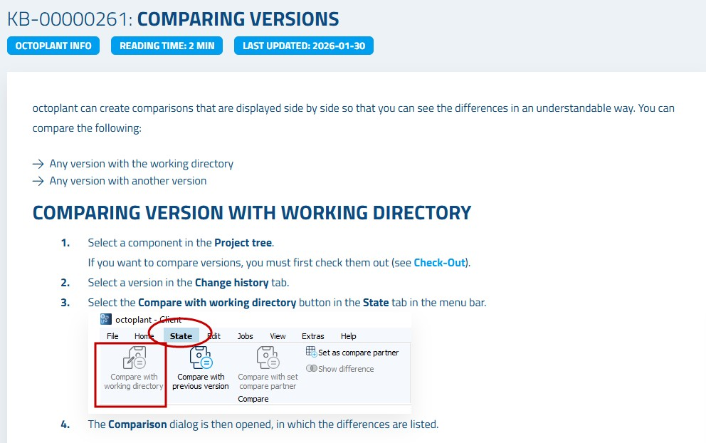
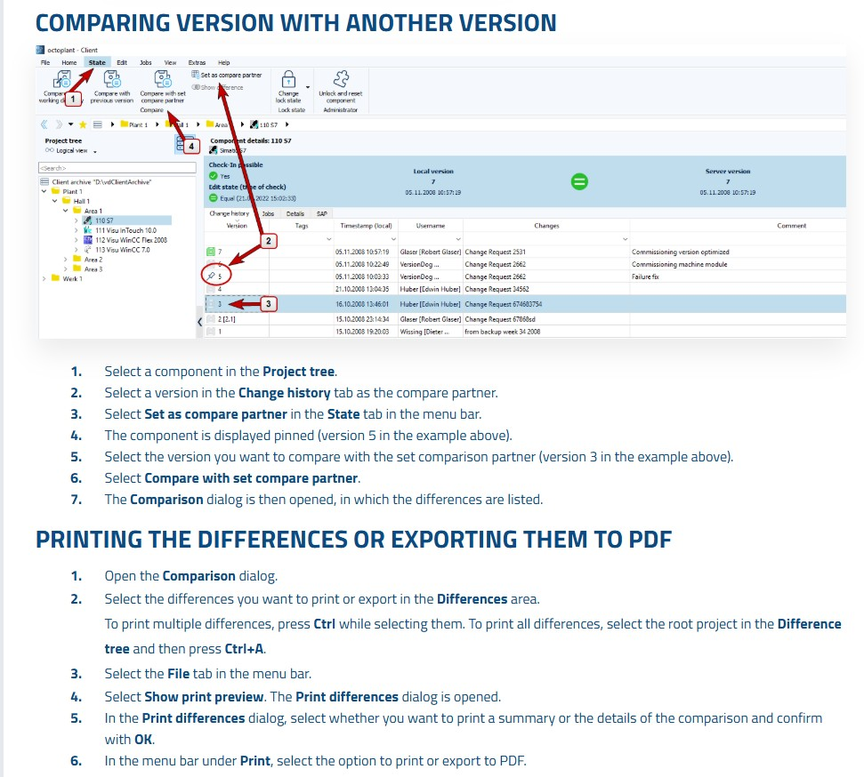

Chapter 7 of 15
Recovery and Restore
Recovery is one of Octoplant's most critical capabilities. When a device program is corrupted, accidentally overwritten, or needs to be restored to a previous state, Octoplant provides multiple recovery paths. This chapter covers all four recovery scenarios.
1
Scenario A: Restoring a Server Version from a Backup
Use this when the server version is incorrect and you need to replace it with the content of a backup taken directly from the physical device.
1
In the Jobs tab, identify the job result where the server version and backup differ (status: Different).
2
Right-click the backup entry you want to restore and select Copy backup to directory.
3
In the dialog, click Next, then Replace and copy to overwrite the working directory with the backup content.
4
Return to the UserClient, select the component, and click Create new version. Add a comment explaining the recovery (e.g.,
Recovery: Restored from backup dated 2026-01-15).5
Click Create version and Check-In to update the server version with the restored content.
2
Scenario B: Comparing Two Consecutive Backups
Use this when you want to understand what changed on a device between two backup cycles.
1
In the job results, look at the Prev. backup ↔ Backup column for a 'Different' status.
2
Right-click the result and select Compare previous backup with backup.
3
Review the differences. Based on the comparison, decide whether the latest backup is correct or whether you need to restore from the previous backup.
3
Scenario C: Restoring a Program Directly to a Physical Device
Use this when a physical device (PLC, HMI, etc.) needs to have its program restored — for example, after a hardware replacement.
1
First, copy the correct backup to the working directory using Copy backup to directory (as described in Scenario A, steps 1–3).
2
In the UserClient, right-click the component and select Open with editor. The engineering software (e.g., SIMATIC Manager or TIA Portal) opens with the restored project.
3
In the engineering software, use the appropriate function to load the program onto the physical device (e.g., in SIMATIC Manager: Target System → Load). The device is now restored to the state captured in the backup.
Critical WarningEnsure you are loading the correct version to the correct device. Loading the wrong program to a production device can cause equipment damage or safety incidents. Always verify the component name, version date, and device IP address before proceeding.
Figure 7.1 – Comparing server version with backup to identify differences

Figure 7.2 – Recovery dialog for restoring a backup to the server

📋
Summary
| Action | Where / How | Result |
|---|---|---|
| Identify Difference | Jobs tab → Server version ↔ Backup column | Mismatch detected |
| Copy Backup to Directory | Right-click backup → Copy backup to directory | Working directory updated with backup |
| Create Recovery Version | Create new version → Add recovery comment | Recovery documented in history |
| Check-In Recovery | Create version and Check-In | Server version updated |
| Restore to Device | Open with editor → Load to device | Physical device program restored |